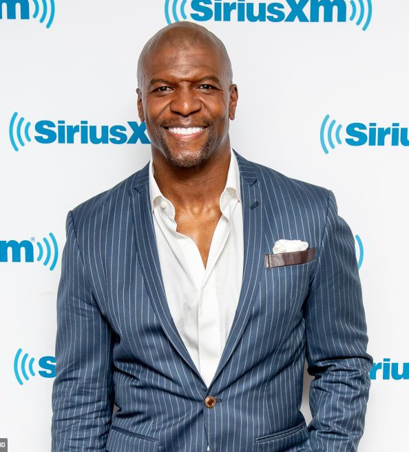

Terrence Alan Crews, conhecido como Terry Crews (Flint, 30 de julho de 1968), é um ator, apresentador, dançarino, ilustrador, ativista e ex-jogador de futebol americano. Ganhou notoriedade mundial ao participar da comédia As Branquelas (2004), e em seguida, do seriado Todo Mundo Odeia o Chris (2006–2009). Crews também ficou conhecido por seus papéis nos filmes Idiocracia (2006) e na franquia Os Mercenários (2010–2014). Crews estrelou o reality show The Family Crews (2010-2011) e apresentou a versão americana do game show Quem Quer Ser Milionário de 2014 a 2015.
Crews jogou seis anos na National Football League (NFL) para o Los Angeles Rams, San Diego Chargers e Washington Redskins, como ponta defensiva e linebacker, e em 1996, usou sua experiência para co-escrever e co-produzir o filme independente Young Boys Incorporated. Aposentou-se da NFL em 1997 e se mudou para Los Angeles com o desejo de ser ator. Sua estreia ocorreu em 1999 quando foi selecionado para um programa de esportes radicais chamado Battle Dome com outros atores-atletas do mundo.
Crews, um defensor público dos direitos das mulheres e ativista contra o sexismo, compartilhou histórias dos abusos sofridos por sua família nas mãos de seu pai violento. Ele foi incluído no grupo de celebridades nomeadas como Pessoas do Ano da revista Time, por compartilhar histórias de abuso sexual com o público.